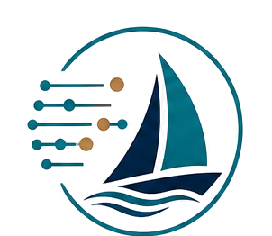

Practical over performative
Solutions should make work clearer, faster, or more reliable. The technology serves the outcome.

DataSail SolutionsAbout
Datasail Solutions is a veteran-owned consulting practice helping organizations use modern tools, data, automation, and AI to improve how work gets done.
Point of view
Many organizations know AI matters, but the useful path is rarely as simple as buying a tool or adding a chatbot. The better question is: where can modern technology improve a decision, remove a bottleneck, or give a team time back?
Datasail Solutions approaches that question with an AI-native work style and a business-first mindset. The result might be an AI-enabled workflow, but it might also be a cleaner reporting process, a custom internal app, better data visibility, or targeted education for the team.
About Mike Locy
I'm a Navy veteran and product leader with more than 20 years of experience helping technology companies solve real customer problems, create differentiated solutions, and drive business results.
Through Datasail Solutions, I partner with businesses looking to improve productivity, apply emerging technologies like AI and automation, and deliver better customer experiences.
Solutions should make work clearer, faster, or more reliable. The technology serves the outcome.
Good consulting reduces uncertainty. You should know what is being built, why it matters, and how to use it.
AI is used throughout the delivery process to move faster, explore options, and improve quality.
Projects are handled with ownership, clarity, and follow-through from the first conversation to the final handoff.